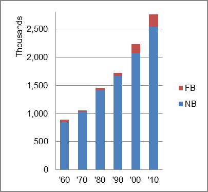

The foreign-born (FB) population increased from 32,133 in 1960 to 222,638 in 2010. That was an increase of 592.9 percent. The foreign-born share increased from 3.6 percent in 1960 to 8.1 percent in 2010.
The share of the overall population that was native-born (NB) increased by 196.0 percent.
Utah: Population 1960-2010 
The first chart below shows the three population change factors for three periods adjusted for annual average amounts. The largest factor adding population in all periods was B-D.
The second chart shows the same data but with an adjustment to reflect births to immigrants shifted to NIM. In it, B-D still accounted for a majority of added population.
Utah: Sources of Population Change 1990-2013 Utah: Sources of Population Change (Adjusted) 1990-2013
B-D NDM NIM B-D NDM NIM 90-'99 72.4% 19.5% 8.1% 90-'99 65.2% 19.5% 15.3% 00-'09 75.0% 11.1% 13.9% 00-'09 65.1% 11.1% 23.8% 10-'13 86.2% 3.6% 10.2% 10-'13 71.5% 3.6% 24.8%